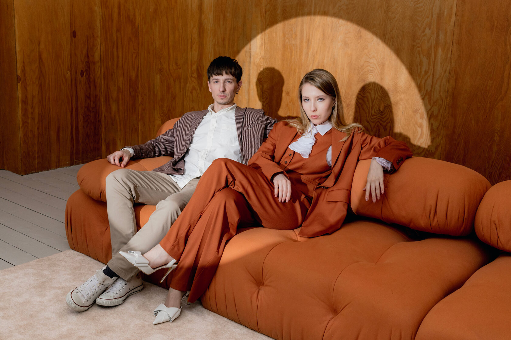

О группе

UBEL — пионеры нуарного поп-гранжа, дуэт Егора и Варвары Убель — родных брата и сестры. Мировые критики тщетно бьются в попытках определить единый жанр их музыки. Группу маятником несет от сурового минимала в стиле электро-гранж до нежных акустических баллад и обратно.
Варвара — звезда джазовой сцены, победитель и член жюри популярного вокального телешоу «Ну-ка, все вместе!».
Егор — востребованный студийный музыкант и продюсер, участник коллектива «Багровый Фантомас».
Подробнее с дискографией можно ознакомиться в разделе Альбомы.